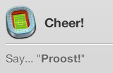
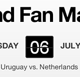

The Pretend Fan Machine
- 
- 
With the 2010 World Cup fast approaching, we realised that some of us at Rattle knew more about international football than others, and that there were plenty of countries who none of us knew much about at all. We all wanted to watch plenty of matches though, and spectating is always more fun when you pick a side to support - but who to pick? We wondered whether a computer could help with this.
The Pretend Fan Machine was our solution. We researched each of the 32 countries in the World Cup, and assessed them on both their football prowess and their cultural exports. These facts were then crunched, weighted and scored, resulting in a recommendation of which team to support for each of the matches.
Alongside each recommendation is a few key facts about the team: their top player, how to cheer them on in their own language, and which national tipple to drink if they win.